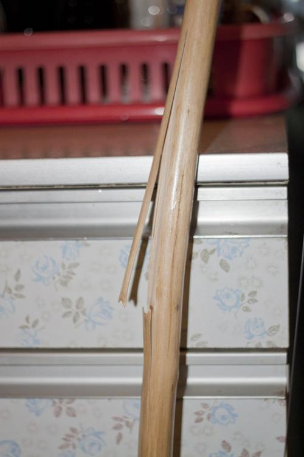
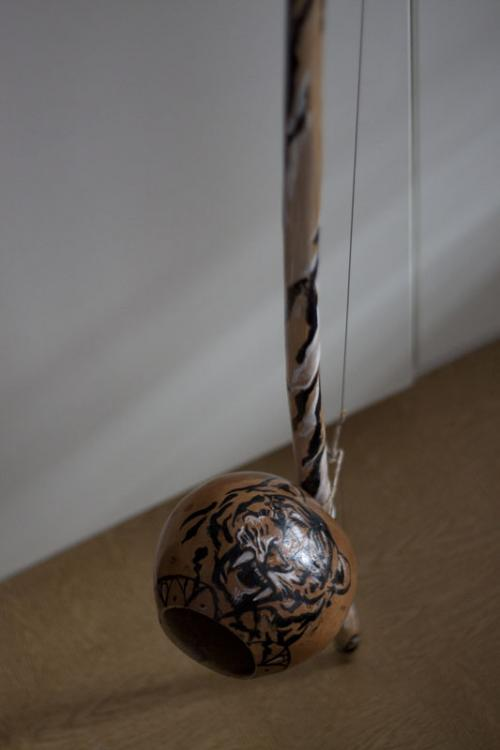

Скорая помощь
С момента приобретения беримбау мною были встречены множества проблем, которые со временем все-таки были решены.
Сначала было сложно натянуть. Получалось только попытки с 5-7, иногда даже больше 10. Позже, на стволе, в месте, где был срезан сучок, с треском отслоились полоски «покрова» в обе стороны. Я пытался заклеить, но через некоторое время опять подружки со звоном вставали как штыки. Мне показалось, что из-за неумелого обращения скоро беримбау простится со мной, поэтому я решил „Раз уж умрешь, то умри красиво!“ и отнес инструмент знакомой художнице. Она посоветовала отрезать полоски, зашкурить и покрыть лаком.

«Боишься — не делай, делаешь — не бойся!»
Все было сделано именно так. И через несколько дней я забрал инструмент с нанесенным, как я хотел, рисунком на кабасе. Замечу, что после отрезания натягивать беримбау стало в разы легче, чему я не мог не нарадоваться.
Струна. Это история историй. Сначала «оригинальную» струну потеряли при покраске верги, но быстро предложили альтернативу в виде стальной проволоки (вроде она была для занавесок). Изготовил струну, натянул — звучала ни чуть не хуже предыдущей, только прочность оказалось неравной. Как-то раз, во время натягивания инструмента, струна лопнула и пролетела в паре сантиметров от моего лица. Мама моя была не в восторге от увиденного и после увиденного каждый раз при виде беримбау говорила, чтоб „лишь бы он исчез из дому“. Потом была найдена «оригинальная» струна, но и она сдала позиции, лопнув на роде. Новую струну долго искать не пришлось: купил у знакомого, и теперь продолжаю играть.
Также кабаса получала ранения. Во время игры в руках «умелого» музыканта, кабаса дважды оторвалась и простучалась об пол вдоволь. После чего, на краю «дырки» образовалась довольно глубокая трещина. Суперклей и слой лака по трещине привели тыковку в чувства.

Так вот, товарищи-капоэйристы, подскажите, пожалуйста, как можно укрепить ствол верги? Говорили, что можно обмотать то ли изолентой, то ли чем еще, не влияя на звук. И, по-возможности, напишите про свои проблемы, связанные с починкой инструмента.